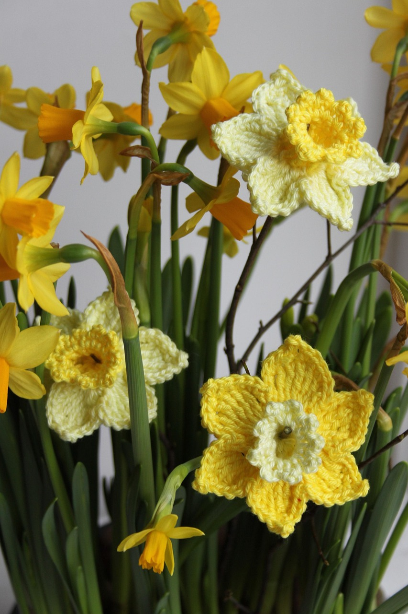
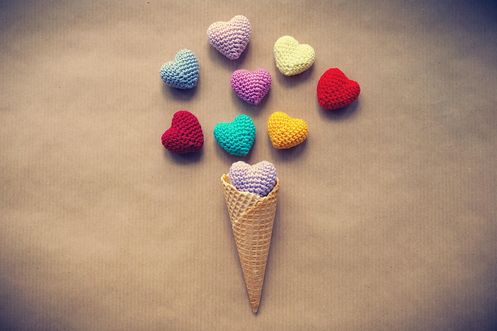
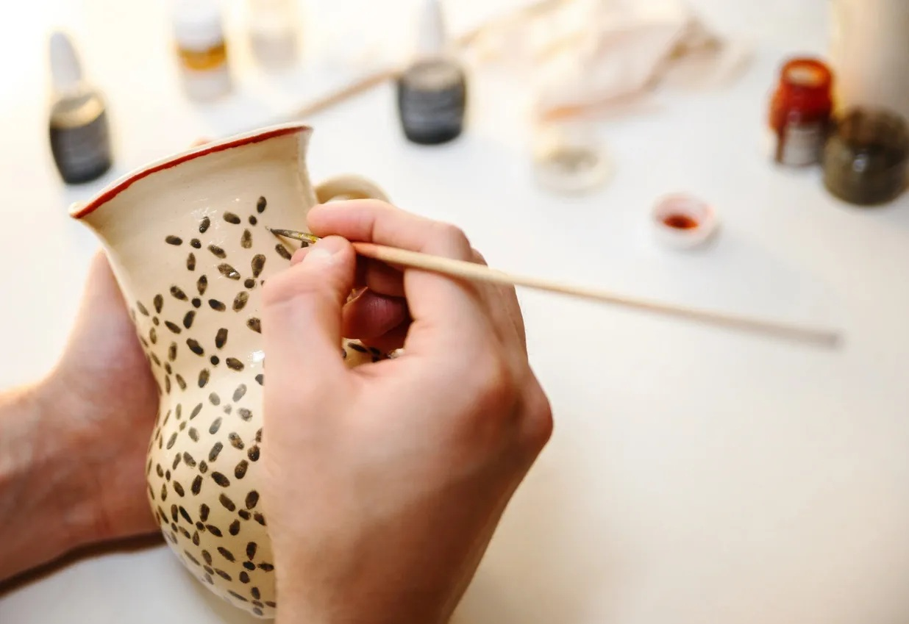

Welcome to Let's Get Crafty!
Your one-stop shop for all your crafting needs. Whether you're into knitting, pottery, or painting, we've got you covered with a wide selection of high-quality materials and tools. Explore our categories to find the perfect supplies for your next project!
Gallery


